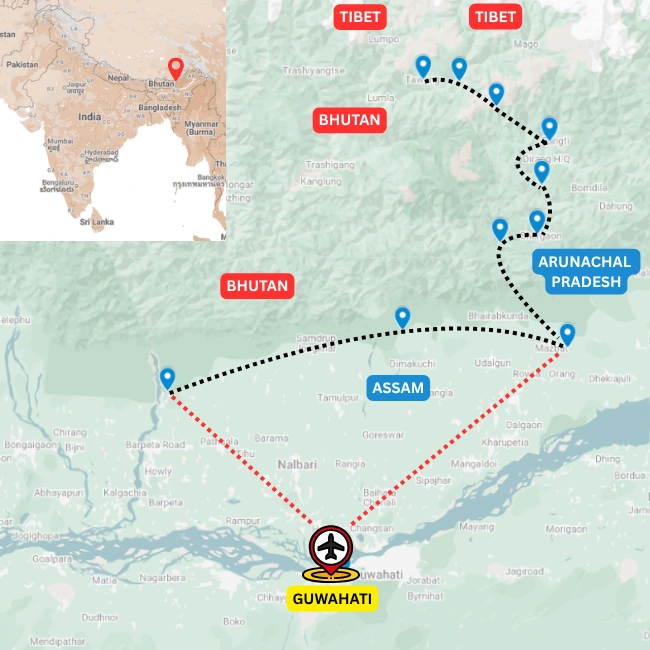

Overview
Ride from the Assam valley into the Eastern Himalayas
The Road to Tawang is a cycling tour in Arunachal Pradesh that moves from the Brahmaputra Valley into the high mountain country of the Monyul region. For a wider state overview, see our Arunachal Pradesh tours page.
The route sits close to the India, Bhutan and Tibet borderlands, where Himalayan landscapes, Buddhist culture and remote road riding come together. Travellers comparing options in the same region may also want to look at Watershed of the Brahmaputra for eastern Arunachal riding.
Along the way, the journey offers time with Monpa, Sherdukpen and Brokpa communities, quiet backroads, mountain settlements and monasteries. If you are comparing travel windows, our guide to the best time to visit Northeast India helps explain when western Arunachal usually works best.
Ride Details
Route character

Journey Flow
The tour in sections
This is an indicative flow. The final route is shaped around your dates, pace, group profile and local conditions.
North bank of the Brahmaputra
Begin along the north bank of the Brahmaputra, moving through Assam's lowland landscapes, riverine settlements and the plains that lead toward the Arunachal foothills.
The lower range
Enter the lower ranges of western Arunachal, where the road begins to climb through forested valleys, smaller settlements and the first sustained hill sections of the journey.
High roads of the Monyul
Ride into the high mountain country of the Monyul, with long climbs, dramatic Himalayan views, monasteries, villages and the cultural heartland of western Arunachal.
Detailed itinerary
Ask for the full route plan and cost
The itineraries are unique, so the detailed route and cost are shared directly after understanding your dates, pace and group size. If you prefer a scheduled version, see the Road to Tawang fixed departure. You can also compare this route with other Arunachal Pradesh tours and our broader cycling tours in Northeast India guide.
Photo Gallery
Moments from the Road to Tawang
Enquire
Plan Cycling in Western Arunachal
Share a few details and we will get back to you with the best route, duration and cost options.